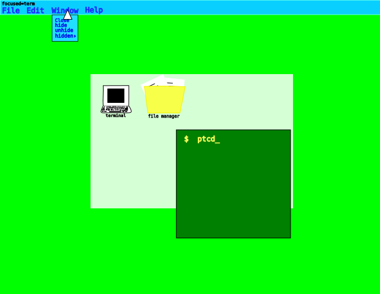

Добро пожаловать на сайт Юрия. Юрий - программист данного документа.
Здесь я буду публиковать свои блоги, видео, посты а также программы.
Коментарии к видео публикуются на сайт при помощи написания коментария на почту domin.yak@yandex.ru, и я его добавлю в код сайта.
Синяя подчёркнутая линяя - ссылка на вложенный документ; нажав на неё вы перейдёте в документ на который ссылка указывает.
Зелёная подчёркнутая линяя - ссылка на вложенный файл; нажав на неё вам на компьютер скачается файл на который указывает ссылка (через интернет).
Красная подчёркнутая линяя - ссылка на древо каталогов; нажав на неё в браузере откроется папка, и браузер превратится в своеобразный файловый менеджер.
Кнопка синего цвета на главной странице (здесь) - изменит какой то блок текста на тот блок текста, который указывает.
Нажмите любую интересующую кнопку в левом столбце.
Итак. Сейчас поведую краткую историю о себе, пока её будет мало но со временем данное откровение будет редактироватся.
Я родился в 2014 году. С самого детства я был погружён в цифровой мир.
Не то что бы прям погружён, но всё же технологии меня окружали с самого рождения.
Планшет (который мне возможно купили в Крыму, так как документация там на украинском) и компьютер.
Это у меня уже было считай сразу после рождения.
Потом я школьником стал начальных классов и тогда, мне понравилась анимация.
Я очень хорошо рисовал мультфильмы, и никогда не ратоскопировал.
И однажды мне Youtube (внутри MS Windows 10) ещё когда мне было 10 лет показал плейлист по языку программирования C#.
И пошло программиское моё ремесло поехало. Я сначала писал на высокоуровневых языках но потом спускался всё ниже и ниже.
И чём ниже тем больше мне нравилось, в итоге в 11 я, даже не дочитав не Столярова не AMD Architecture's Programming Manual (за которые я тогда взялся),
я сел писать загрузчик. StackOverflow, Gemini и OSDev, и я просто переписывал разные куски кода и от одного, и от второго и от третьего.
И кинул я тогда этот загрузчик перейдя на С. И Столярова я кинул и AMD Architecture's Programmers Manual я кинул.
И теперь когда я уже повзрослел, чуть, я решил что буду сначала всё читать, а потом только приступать к обучению-практике, попутно программируя простые программы на С.
Ну и свою ОС я создать обязан. Я очень люблю программирование операционных систем, поэтому скоро (близжайшие 2 года) на сайте в разделе Soma Free Opensource Project
будут нормальные файлы заместо заглушек.
Потом мне резко начало симпатизировать православное христианство, я начал верить в Бога, читать Библию и жить по заповедям Христа Иисуса нашего.
В разделе программы, как ни странно, хранятся программы, и, как уже понятно, мои.
Грубо говоря, прогрммы некоторые наговнокодены, но ничего, не зря же есть cvs или git.
Здесь поддержка это отправка улучшений исходного кода, это отправка старого б/у хардвара и элементарная похвала.
По исходникам на почту domin.yak@yandex.ru.
Я создам свою операционную систему, и да, она будет с VGA графикой, разрешением 640х480 и 32 битная.
"Почему такое маленькое разрешение?" потому, что для VGA - это максимум.
"Почему VGA, давным давно есть VBE и видеокарты?" потому, что так как я новичок
(а VBE сложнее VGA в использовании), я пока останавлюсь на VGA, а драйвера под ОС школьника 13 лет
ни AMD, ни Intel, ни NVIDIA писать не будут.
Да и тем более графика, что держится на процессоре, будет работать везде (чего я хочу добится в первую очередь)
Минимум для ОС - 64 мб памяти, для DOS - 512 кб памяти.
Я не люблю современные ОС за их огромность, я считаю что чем больше ОС - тем сложнее её архитектуру
удержать в голове. Да, я считаю что нужно, чтобы архитектура ОС умещалась в голове, и когда что то
происходит внутри ОС нужно помнить, что в коде на самом деле происходит то.
Я считаю что если ОС не получится запустить на старом Intel Pentium, то ОС плохо оптимизированна.
Да, технологии двигаются вперёд, но у кого то на такие современные технологии нету денег, или возможности
их купить. И в итоге таким людям приходится искать в интернете какую нибудь очень редкую ОС чтоб им на такое старое железо установить.
Это плохо. Поэтому, как бы там технологии вперёд ни двигались, нужно хотя бы, хотя бы делать 2 выпуска новой ОС
например, одну для новых ПК, другую для старых.

На картинке изображён примерный вид моей будующей ОС, я нарисовал это в Inkscape, и сделаю ОС похожей на то,
что на картинке. Похоже на Windows 3.1, я решил так сделать потому, что заместо панели внизу окно посередине экономит место на экране с
маленьким разрешением. "А как же панель вверху?" она перекрывается окнами, то есть если увеличить окно на весь экран или просто перетащить
окно на верхнюю панель, окно перекроит верхнюю панель.